A farmhouse living room works because it balances two things that don't always go together easily: genuine comfort and real character. The best versions feel lived-in rather than staged, built from natural materials and a bit of history rather than anything too polished.
None of the ideas below require a full renovation to bring into a room. Most work as individual additions, a rug, a set of baskets, a lighting swap, layered in one piece at a time.


10 Farmhouse Living Room Ideas
1. Woven Baskets for Storage
Woven baskets are close to essential in a farmhouse living room, offering genuine storage alongside a bit of rustic texture.
Made from wicker, seagrass, or rattan, they add warmth without looking purely utilitarian, large baskets hold throw blankets and cushions, while smaller ones work well for books, magazines, or everyday items.
Placed beside the sofa, tucked under a console table, or set on open shelves, they give the room simple, good-looking storage that doesn't need to be hidden away.
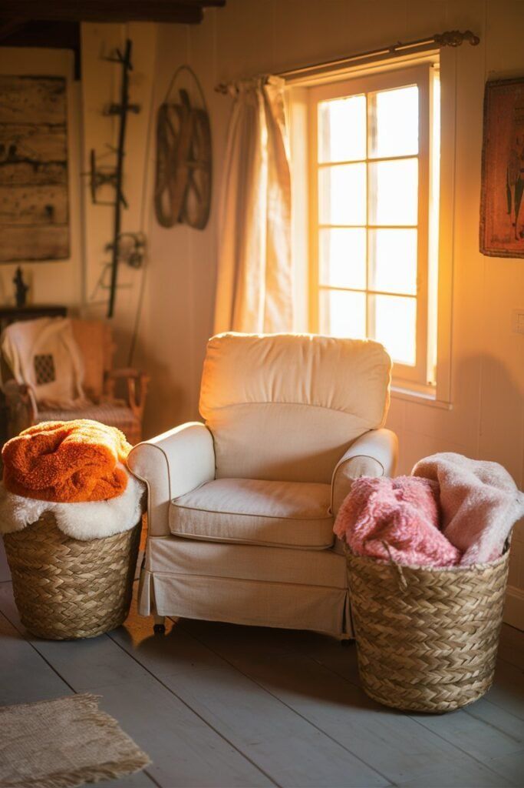
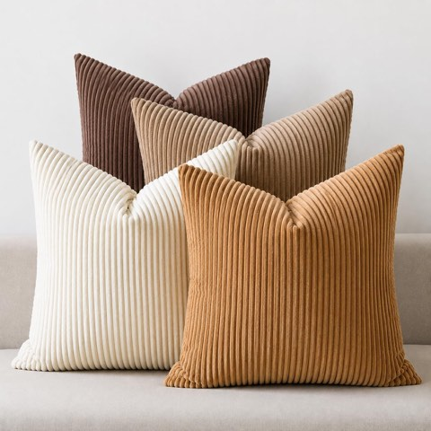
LANANAS Decorative Corduroy Throw Pillow Covers, 18 x 18 Inch, Neutral Brown
Shop on Amazon
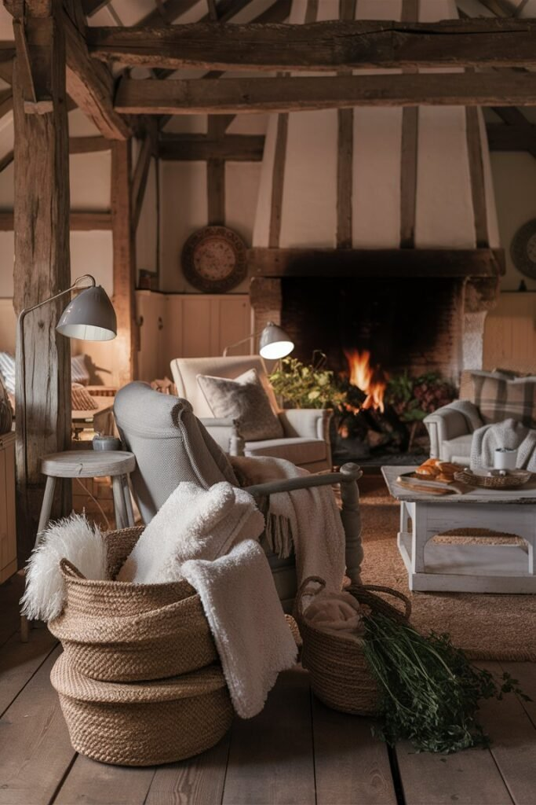
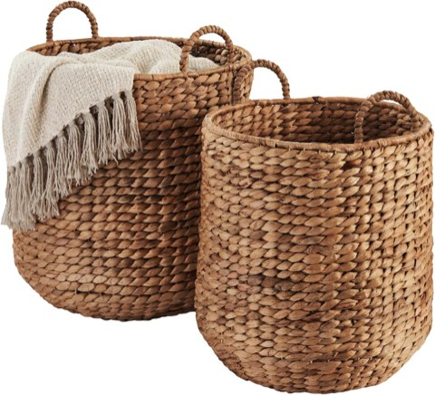
Best Choice Products 2-Piece Round Nesting Baskets with Handles, Water Hyacinth
Shop on Amazon2. Barn Doors for a Rustic Touch
Barn doors bring classic farmhouse appeal and genuine utility together in one piece.
A sliding design, exposed hardware, and worn wood make them a stylish substitute for a conventional door, whether used decoratively or to actually separate the living room from an adjacent space.
Reclaimed wood leans toward an authentic, well-worn look, while a smoother painted finish suits a more modern farmhouse direction.
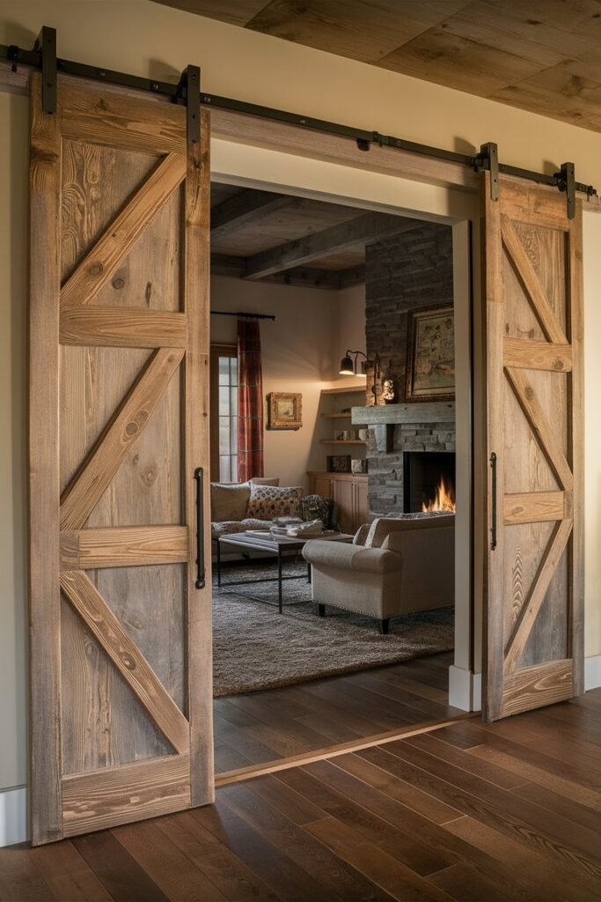
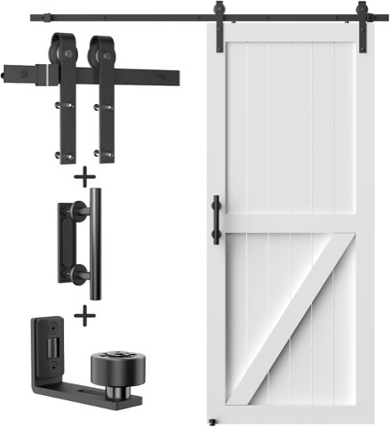
6 FT Heavy Duty Sliding Barn Door Hardware Kit with Floor Guide and Pull Handle
Shop on Amazon3. Layered Textures With Rugs
Layered rugs bring warmth, depth, and a genuinely homey farmhouse feel to a living room floor.
Starting with a large natural-fiber rug like sisal or jute as a base, then layering a softer, patterned rug on top, a Persian or a plush wool piece, builds real visual richness underfoot.
The combination feels both comfortable and considered, turning a plain floor into one of the room's quieter design features.
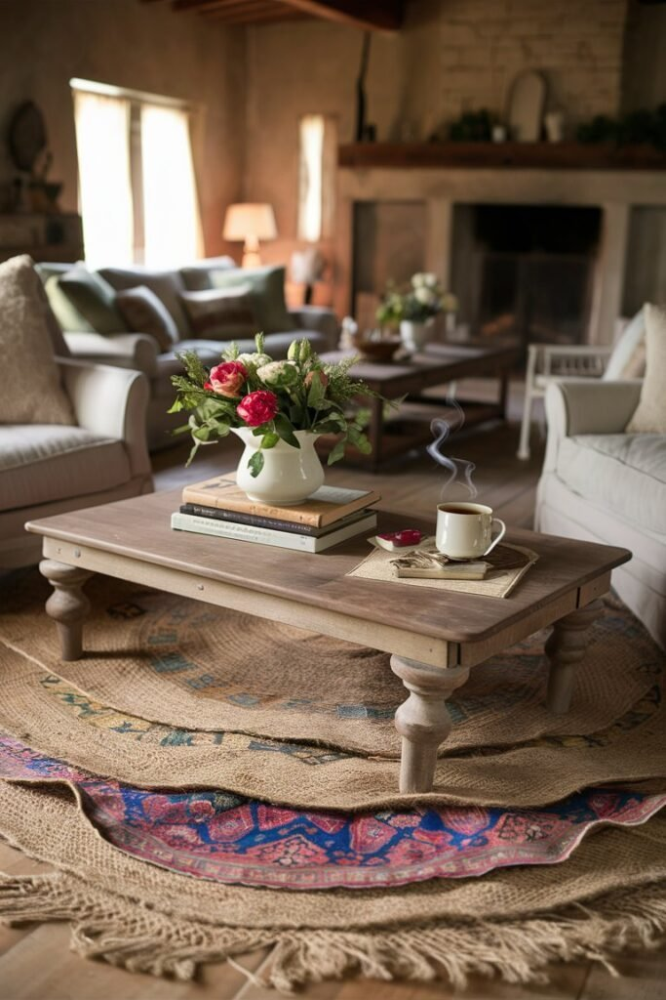
4. Rustic Wooden Beams
Rustic wooden beams bring real timeless appeal to a farmhouse living room, and they make a space feel cozy and grounded almost instantly.
The natural texture and imperfections in these beams, whether original to the house or added later, add genuine character overhead.
Paired with shiplap walls, a neutral palette, and vintage-inspired decor, exposed beams give a ceiling depth it would otherwise be missing entirely.
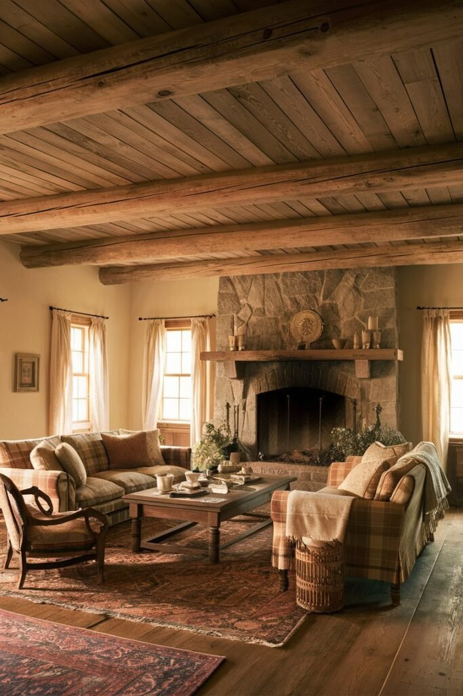
5. Distressed Wood Mantel
A distressed wood mantel makes a genuinely striking focal point in a farmhouse living room.
The worn, imperfect surface gives the space a sense of history and character that a smooth, new mantel can't replicate, and it pairs well with brick, stone, or shiplap as a backdrop.
Arranged with seasonal decor, a few candles, or simple styled objects, a distressed mantel reinforces the farmhouse look without requiring much else in the room to work around it.
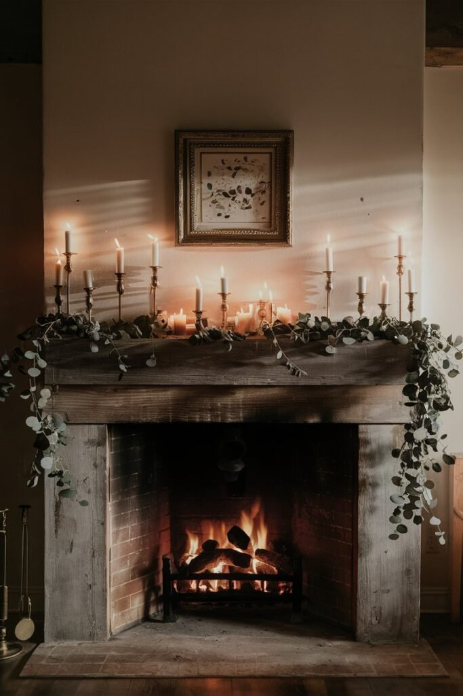
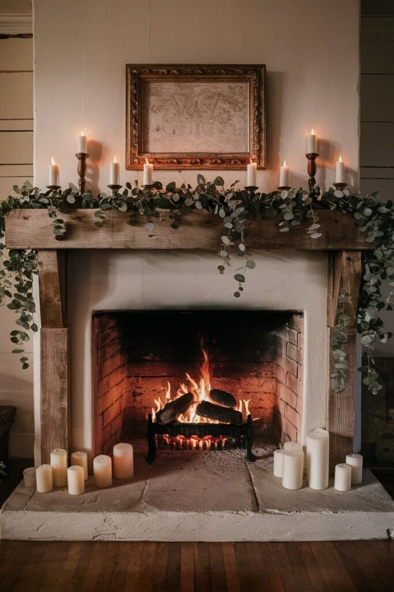
23.6 Inch Distressed White Rustic Farmhouse Floating Wall Shelf
Shop on AmazonAZSKY 36 Inch Floating Fireplace Mantel Shelf, Black, Handcrafted
Shop on Amazon6. Vintage-Inspired Lighting
Vintage-inspired lighting does genuine work adding character and warmth to a farmhouse living room.
Industrial-style sconces, lantern-style pendant lights, and rustic chandeliers all bring a bit of history and craftsmanship into the room, while mason jar lights or wrought iron fixtures push the character even further.
Paired with shiplap walls and exposed wood beams, warm, soft lighting pulls the whole room together into something that feels both considered and genuinely welcoming.
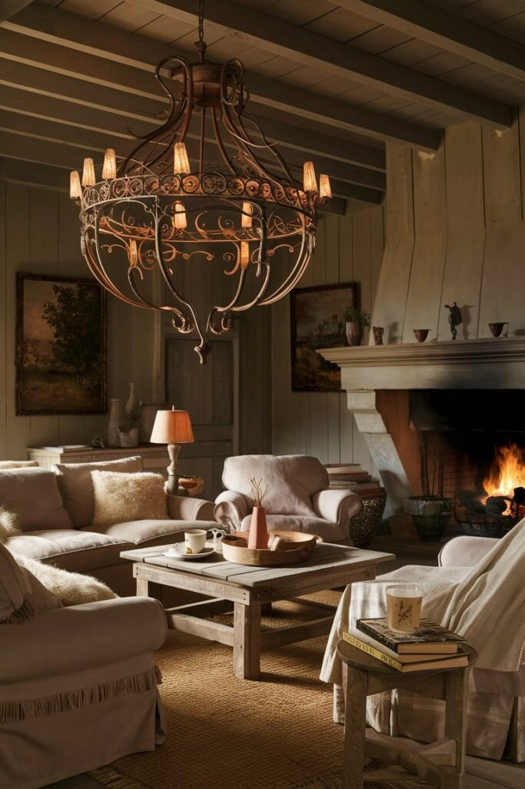
Garvee 8 x 10 Washable Easy Jute Area Rug, Scalloped, Tan
Shop on AmazonRELEANY Washable Area Rug, 8 x 10 Ft, Brick Brown Green
Shop on Amazon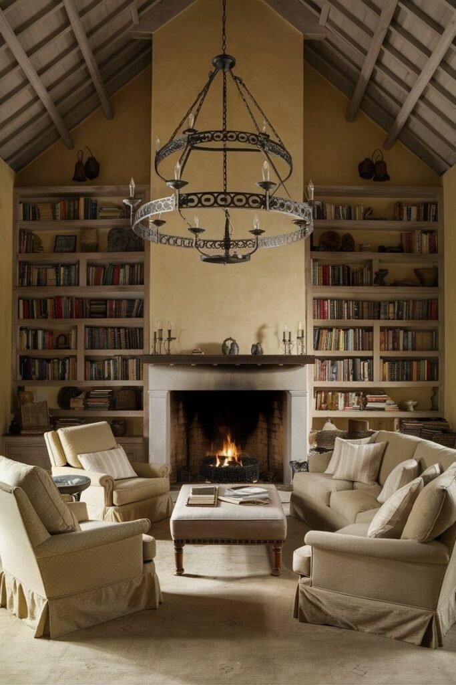
7. Shiplap Accent Wall
A shiplap accent wall brings rustic texture and depth to a living room in a way flat drywall simply can't.
The simple lines and soft grooves create a lived-in effect that works equally well alongside modern or vintage furniture.
Painted a clean white for a fresh, airy feel, or left in its natural wood tone for something more rustic, shiplap also makes an ideal backdrop for displaying art or a fireplace.
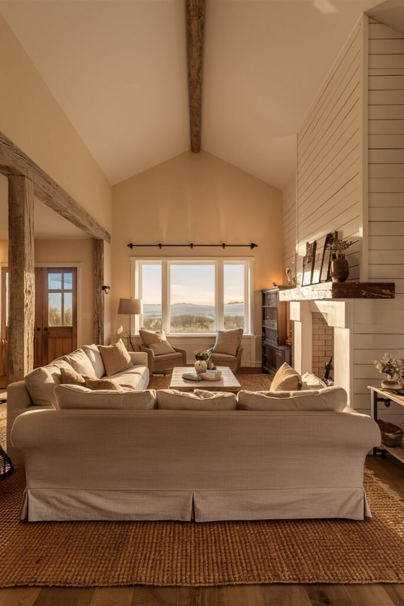
Best Choice Products 2-Piece Round Nesting Baskets with Handles, Water Hyacinth
Shop on AmazonNatural Jute Rope Storage Basket Set of 4 for Shelves
Shop on Amazon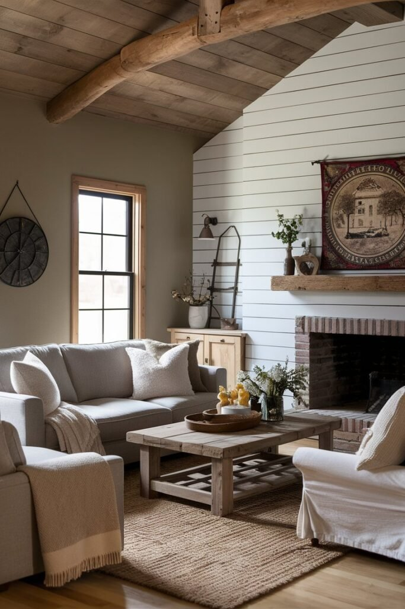
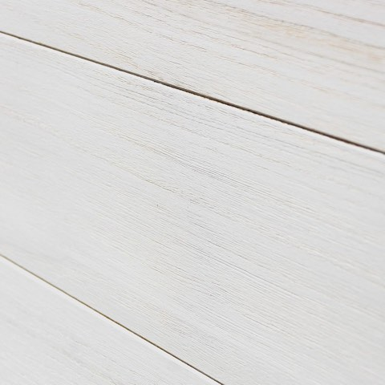
Brosisincorp Real Wood Shiplap Peel and Stick Wall Panels, White, 10 Pcs
Shop on Amazon8. Oversized Cozy Sofas
A large, genuinely comfortable sofa works as the central piece of most farmhouse living rooms, balancing comfort and design in equal measure.
Soft textiles, deep seats, and fluffy cushions invite actual use rather than just display, and neutral-toned linen or cotton slipcovers reinforce the farmhouse feel.
Large throw pillows and a knit blanket layered on top add warmth and texture, making the sofa the room's natural gathering point.
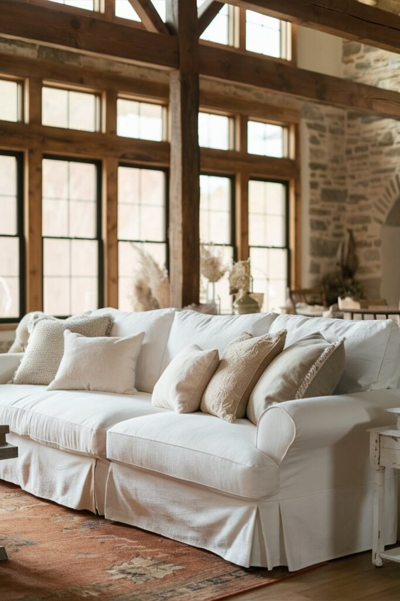
9. Reclaimed Wood Coffee Table
A reclaimed wood coffee table adds warmth, character, and a genuine sense of history to a farmhouse living room.
Built from salvaged wood, these tables highlight rustic appeal through natural imperfections that a factory-made table simply can't replicate, while also giving old material a meaningful second life.
Set on a woven jute rug or paired with cozy linen upholstery, a reclaimed wood table reinforces the farmhouse look without needing anything else in the room to match it.
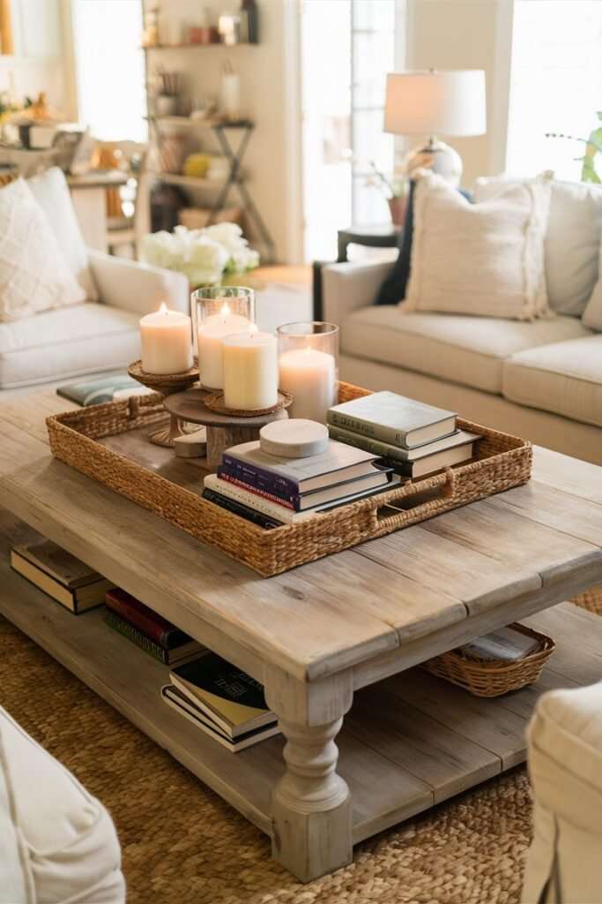
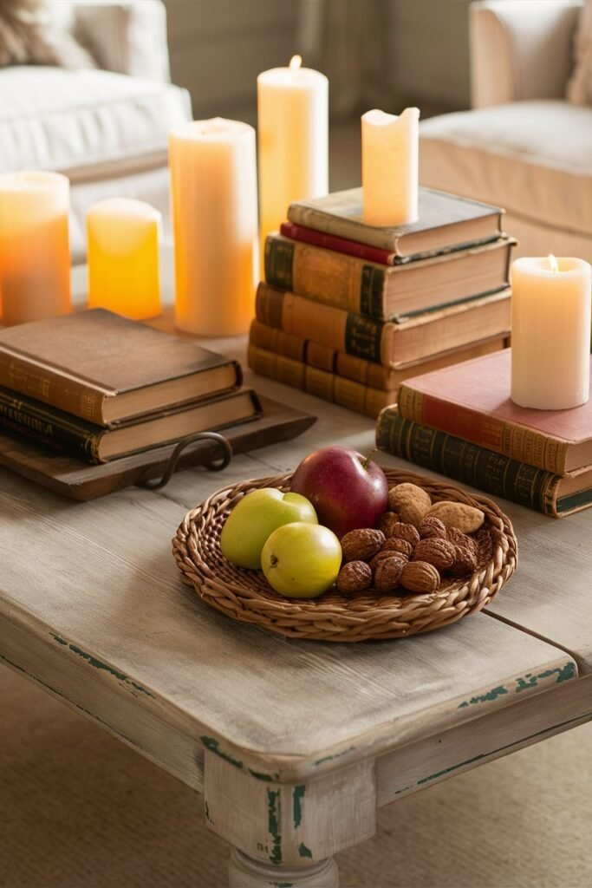
Rustic Reclaimed Driftwood Coffee Table, Natural Wood
Shop on AmazonCAMILSON Easy Jute Natural Fiber Area Rug, 8 x 10, Indoor Outdoor
Shop on Amazon10. Neutral Color Palette
A neutral color scheme sits at the center of most comfortable farmhouse living rooms, creating a gentle, timeless backdrop that rarely feels dated.
Shades of white, beige, taupe, and soft gray build a laid-back, harmonious environment while still giving rustic wood tones, vintage decor, and comfortable textiles a place to stand out.
Layering a few varying neutral tones and materials across the room keeps the space feeling open and spacious rather than flat.
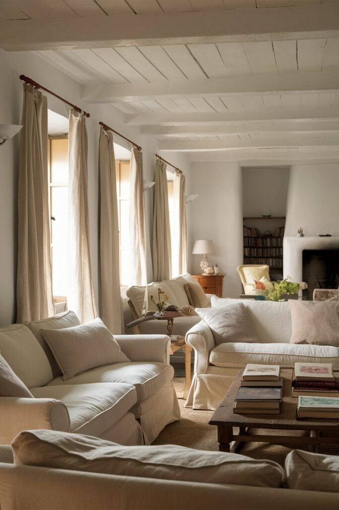
LANANAS Decorative Corduroy Throw Pillow Covers, 18 x 18 Inch, Neutral Brown
Shop on AmazonFinal Thoughts
Bringing farmhouse character into a living room comes down to building a space that feels cozy, inviting, and effortlessly put together, rather than chasing every rustic trend at once.
Starting with one or two elements that genuinely appeal, a reclaimed wood table, a layered rug, a vintage light fixture, and building outward from there tends to produce a room that feels collected over time rather than assembled in a single weekend.